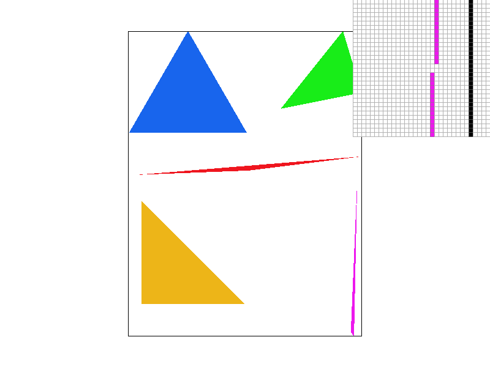
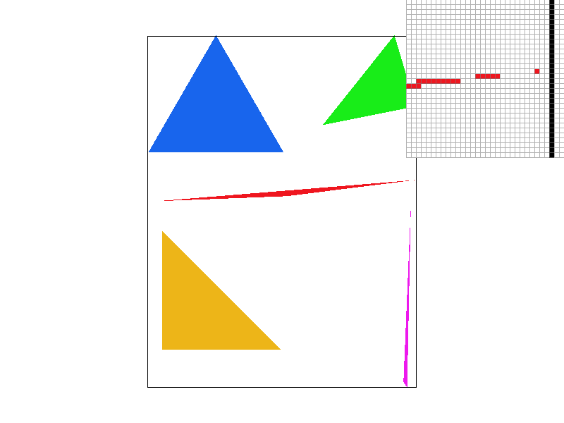
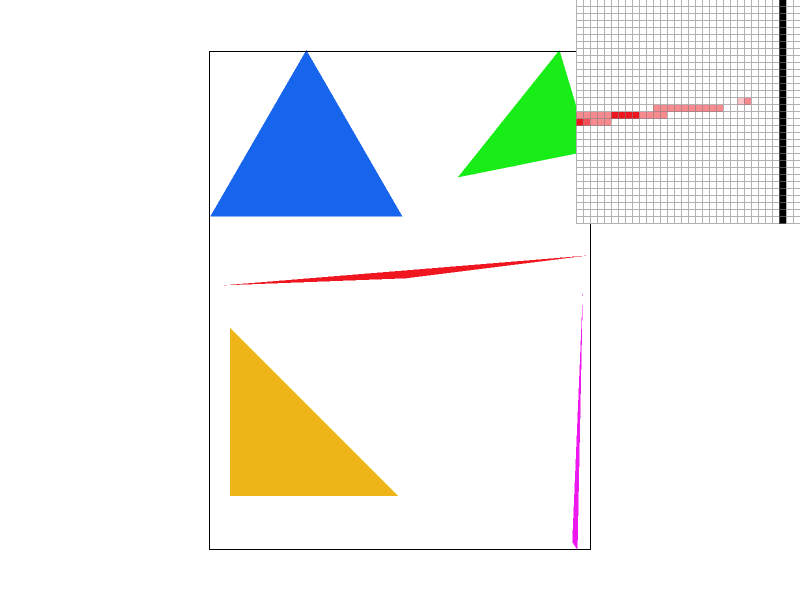
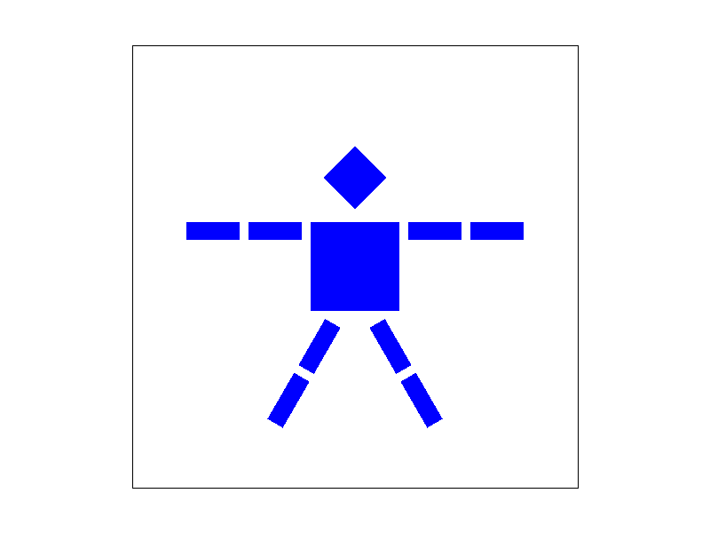
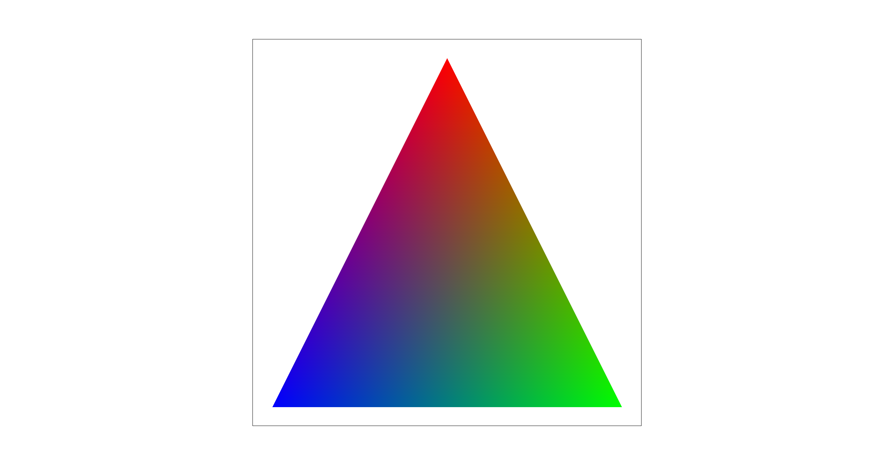
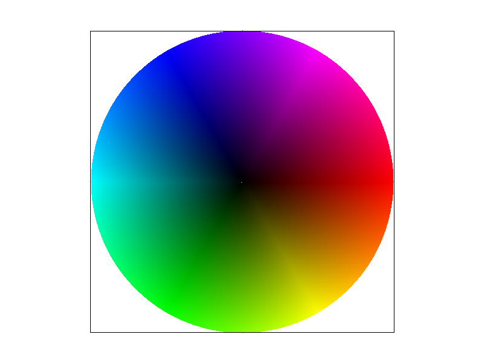
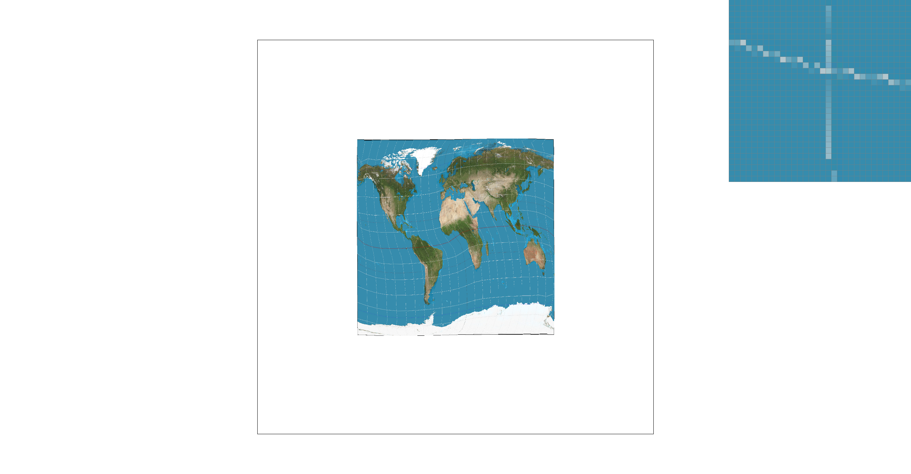
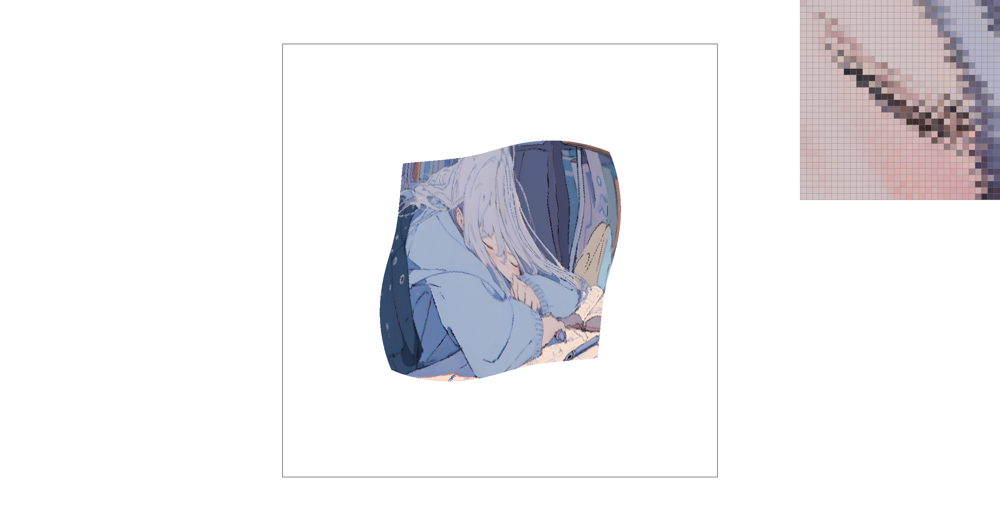

This is originally written in docs\index.md and exported to docs\index.html using Markdown PDF extension.
I implemented various functionalities related to rasterization (basic and supersampling), texture mapping, and mipmapping. I had a hard time figuring out the index for supersample. I also had a hard time figuring out the 6 combinations for mipmaps for texture mapping, which I thought I understood in lecture. I ended up spending a lot of time in office hour and homework parties. Through this assignment, I gained insights into the complexities and optimizations involved in rendering realistic 3D scenes on a computer screen.
To rasterize triangles, I implemented rasterize_triangle in rasterizer.cpp, using a basic algorithm that calculates the bounding box of the triangle and determines whether each pixel is inside the triangle using 3 line tests. If a pixel is inside the triangle, it is filled with the specified color.
This algorithm is checking every pixel in the bounding box, which makes it no worse than one that checks each sample within the bounding box of the triangle.

basic/test4.svg rendered with the default viewing parameters, with the pixel inspector centered on a thin corner of the purple traingle, which is interesting because it's aliasing and looks broken.
The key data structures used in my supersampling algorithm include the resized sample buffer. It is resized to (width * sqrt(sample_rate)) * (height * sqrt(sample_rate)) in order to represent all of the subpixels. Then, I used resolve_to_framebuffer() to average subpixels that are inside the same pixel to get the actual color of that pixel.
Supersampling is useful because it samples multiple points within each pixel and averaging the results. This averaging process helps to blend colors along the edges of triangles, resulting in smoother transitions and reduced aliasing artifacts. Hence, it improves the overall quality by fixing broken thin lines, weird edges, etc..
To incorporate supersampling into the rasterization pipeline, I introduced additional steps to evaluate the color of each subpixel and average them down to each pixel. This involved modifying the loop that iterates over pixels to iterate over subpixels instead. I also modified RasterizerImp::resolve_to_framebuffer to average subpixels taht are inside the same pixel. The results are then put into rgb_framebuffer_target, which will get printed. In addition, to ensure that lines and points still render correctly, I modified RasterizerImp::fill_pixel to ensure that they are still coming out as a single pixel instead of multiple subpixels.

Default view with a sample rate of 1.

Supersampling with a sample rate of 4.
Supersampling with a sample rate of 16.
With a sample rate of 1, the triangle is aliasing with jagged edge and basically broken. As the sample rate increases to 4 and 16, the jagged edges become smoother, and the overall image quality improves. The thin triangle corner that becomes compelte shows the dramatic effect of supersampling.
To complete Task 3, I implemented translation, scaling, and rotation transforms in the transforms.cpp, which operate in homogeneous coordinates.
With these transforms implemented, I updated the svg/transforms/robot.svg file to depict the cubeman lying down on an invisible bed. I adjusted the colors to show that he's blue, and adjusted his legs to be wide open.

Barycentric coordinates are a coordinate system used to specify the position of a point within a triangle in terms of a weighted sum of the triangle's vertices. They can represent the relative areas of smaller triangles formed by the point and the edges of the triangle.

Since Barycentric coordinates are used, the traingle above that are simply defined by three vertices of red, blue, and green, in svg/perfect_triangle.svg produces a smoothly blended color triangle. As it gets closer to its center, it gets darker, as the Barycentric coordinates are almost equal and thus present an addition of all colors with almost equal weights, which is black.

svg/basic/test7.svg with default viewing parameters and sample rate 1.
Pixel sampling is applying texels from texture to paint a surface. To perform texture mapping, pixel sampling is implemented using two main methods: nearest and bilinear sampling.
Nearest Sampling: I simply assigned the color of the nearest pixel on the texture map to the corresponding point on the surface being rendered.
Bilinear Sampling: I interpolated between the colors of the four nearest pixels on the texture map, based on the fractional distance of the point from each pixel.

From left to right: nearest sampling at 1 sample per pixel, nearest sampling at 16 samples per pixel, bilinear sampling at 1 sample per pixel, and bilinear sampling at 16 samples per pixel.
Comparing these four pictures, their smoothness, details, and computational costs increase from left to right. Nearest sampling at 1 sample per pixel makes each pixel represents a single texel without any interpolation. Increased sample rate doesn't make much difference since nearest sampling does not interpolate between texels, the image is still aliasing, as the line of longitude is broken.
Bilinear Sampling at 1 Sample per Pixel interpolates between the four nearest texels to each screen pixel based on their distances, which produces significantly smoother results. The line of longitude is complete. When the sample rate is increased to 16, it provides the highest image quality, with the fewest broken line visually.
Level sampling is basically choosing the resolution of a picture, with different level of mipmaps to choose from. To implement level sampling for texture mapping, I first found the Barycentric coordinates corresponding to the pixels, calculate corresponding dx and dy to calculate the level, and get the texture color using the get_texel.
Tradeoffs Between Techniques:
Pixel Sampling:
Level Sampling:
Number of Samples per Pixel:
To show four versions of combinations, I found an image of sleepy girl online. I copied svg\texmap\test6.svg and created svg\Rye.svg.
Original image.

From left to right: L_ZERO and P_NEAREST, L_ZERO and P_LINEAR, L_NEAREST and P_NEAREST, L_NEAREST and P_LINEAR.
The tradeoff between rendering speed, memory usage, and image quality is obvious with the inspector of the girl's right eye. The left image (L_ZERO and P_NEAREST) is the fastest but result in some blue colors that should not show up. The second image (L_ZERO and P_LINEAR) provides slightly smoother transitions but still has some extra dark blue pixels. I personally like the third image (L_NEAREST and P_NEAREST) the most, as it balances between aliasing and blurry. The right image (L_NEAREST and P_LINEAR) further reduces, but the image also looks a little blurry if I don't zoom in. Overall, I would pick the combination of L_NEAREST and P_NEAREST, considering computational cost and visual result.